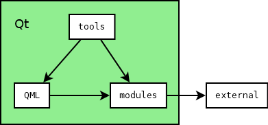

[//]: # ( )
[](https://opensource.org/licenses/MPL-2.0)
[](https://travis-ci.org/michpolicht/CuteHMI)
[//]: # ()
CuteHMI is an open-source HMI (Human Machine Interface) software
written in C++ and QML, using Qt libraries as a framework.
Note: While most of the project uses Mozilla Public License, v.
2.0, some files are distributed under different licenses.
Branches
Branch "master" is a development branch. Development branch may
contain source code that is undergoing deep changes, rendering it
unusable. Consecutive branch numbers denote successive iterations
of the project.
[//]: # ( )
| Branch | Build status | Development status |
|--------|--------------|--------------------| |
[master](https://github.com/michpolicht/CuteHMI) | [](https://travis-ci.org/michpolicht/CuteHMI/branches)
| pre-alpha | | [1](https://github.com/michpolicht/CuteHMI/tree/1)
| [](https://travis-ci.org/michpolicht/CuteHMI/branches)
| alpha | [//]: # ()
Master milestones
- Replace XML project description files by pure QML.
- Implement cutehmi_daemon tool enabling one to run QML
projects in daemon mode.
- Modules and QML extensions are going to be unified as
extensions.
- Modbus extension should use QSerialBus module.
- Modbus extension should provide database backend.
Secondary goals
- Implement extension for Bitcoin Cash payment services.
- Implement extension to deal with GPIO chips (notably on
Raspberry Pi machines).
Compiling
- Get the Qt toolkit. Open-source and commercial editions can be
obtained from https://www.qt.io/.
Qt can also be shipped with Linux distribution.
- Open
CuteHMI.qbs file with QtCreator and
simply build it.
- All extensions dependent on external libraries will be
disabled, if these libraries could not be found. To make the
process of finding the libraries and installing them under Windows
easier, a set of Makefiles is provided, which allows the libraries
to be build from sources. Check out external libraries for more
details. Each extension may provide individual documentation on how
to build it.
Remember that Qbs caches Probe
items' results, so if the library is installed after the project
has been configured with Qbs, it will not show up. You can use
--force-probe-execution option to force Qbs to not use
cached results.
Examples
Refer to individual
tool on how to run examples.
Internals
Directory structure of the project is organized as follows.
- *_sass*, *_layouts* - directories used by GitHub Pages.
- awkgward - code maintanance scripts (don't
bother).
- dev - development notes (irrelevant).
- doc - a place
where documentation shall be.
- examples - self-explanatory.
- extensions - libraries and
QML extensions.
- external
- directory containing "external" libraries.
- extra - various stuff related to the project, such as
T-shirts.
- qbs - Qbs modules and imports.
- tools -
end-user applications.

Dependencies between tools, extensions and
external libraries
Two most important directories are extensions and tools. Extensions combine
functionality of QML extensions and standard libraries. They can be
utilized by end-user applications, but they can be also linked with
each other. Some extensions may depend on external libraries.
Quick links
 1.8.14
1.8.14